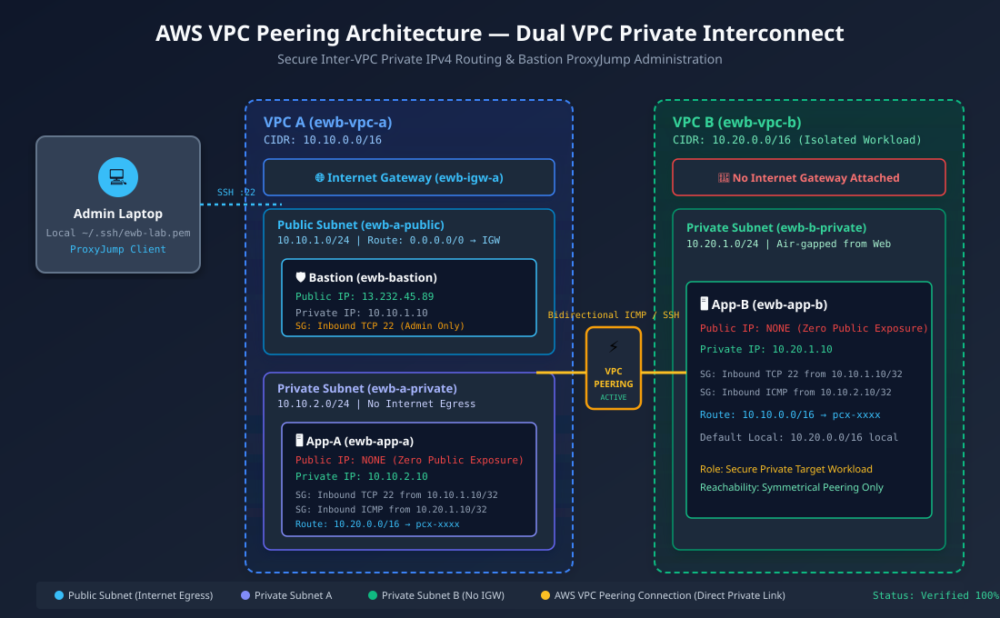

Complete implementation, automated verification engine, and test evidence repository demonstrating private IPv4 peering and ProxyJump administration.

| Resource | Name Tag | Assigned IPv4 |
|---|---|---|
| VPC A | ewb-vpc-a | 10.10.0.0/16 |
| Public Subnet | ewb-a-public | 10.10.1.0/24 |
| Private Subnet A | ewb-a-private | 10.10.2.0/24 |
| VPC B | ewb-vpc-b | 10.20.0.0/16 |
| Private Subnet B | ewb-b-private | 10.20.1.0/24 |
| Bastion Host | ewb-bastion | 10.10.1.10 / Public IPv4 |
| App-A Server | ewb-app-a | 10.10.2.10 (No Public IP) |
| App-B Server | ewb-app-b | 10.20.1.10 (No Public IP) |
| Peering Link | ewb-a-b-peer | pcx-xxxx (Active) |
| Table Name | Destination | Target | Purpose |
|---|---|---|---|
ewb-rt-a-public | 0.0.0.0/0 | ewb-igw-a | Internet for Bastion |
ewb-rt-a-public | 10.20.0.0/16 | pcx-xxxx | Bastion to VPC B Admin |
ewb-rt-a-private | 10.20.0.0/16 | pcx-xxxx | Forward path to App-B |
ewb-rt-b-private | 10.10.0.0/16 | pcx-xxxx | Return path to App-A |
| All Tables | Local VPC CIDR | local | Intra-VPC Routing |
| Test ID | Test Objective | Expected Outcome | Status |
|---|---|---|---|
| TC-01 | Baseline ICMP Reachability (Before Peering Route) | 100% packet loss (No route to host) | PASSED |
| TC-02 | Forward ICMP Ping (App-A → App-B across Peering) | 4 packets sent, 4 received (0% loss) | PASSED |
| TC-03 | Return Path ICMP Ping (App-B → App-A across Peering) | 4 packets sent, 4 received (0% loss) | PASSED |
| TC-04 | Private SSH Administration via Bastion ProxyJump | Direct encrypted tunnel to 10.20.1.10:22 | PASSED |
| TC-05 | Zero Public Exposure Workload Audit | App-A & App-B Public IP: null | PASSED |
| TC-06 | Controlled Failure Injection (Revoke ICMP SG Rule) | Ping drops immediately; 100% packet loss | PASSED |
| TC-07 | Controlled Recovery (Reinstate ICMP SG Rule) | Ping recovers immediately; 0% loss | PASSED |